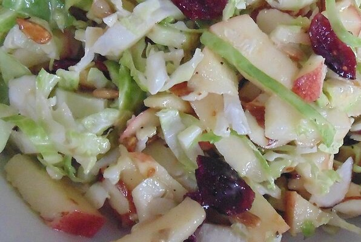

Home
Chopped Brussels Sprout Salad

Description
Gorgeous Italian chopped salad recipe loaded with shredded brussels sprouts, chickpeas, veggies, salami, olives, pepperoncini and delicious cheeses. This flavorful and easy Italian chopped brussels sprouts salad is tossed in a light Italian dressing and makes the perfect hearty lunch or fresh dinner!
Ingredients
- 1 shallot, minced
- ¼ cup cider vinegar
- ¼ cup sunflower seed oil
- 2 tablespoons Dijon mustard
- ½ teaspoon honey
- 1 ½ teaspoon salt
- ¼ teaspoon ground black pepper
- 6 cups Brussels sprouts, trimmed, halved, and sliced
Directions
- Whisk shallot, vinegar, oil, Dijon mustard, honey, salt, and pepper together in a small bowl.
- Place Brussels sprouts, apples, cranberries, almonds, sunflower seeds, and pumpkin seeds in a bowl; pour vinegar mixture over and toss to combine.